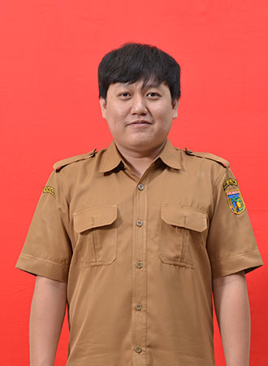

Fandy Kadang

Financial Analyst
Summary
- 6 Years experience in public financial management and administration
- High proficiency in Microsoft Excel (VBA) and Power BI
- Strong background in regional financial planning
Education
Tadulako University, Bachelor of Economy, Accounting Major
GPA 3,35 of 4,00
Thesis :
The Influence of Professionalism and Auditor Experience on the Materiality Level in The Examination of Financial Statements (A Study on The Financial and Development Supervisory Agency Representative Office of Central Sulawesi Province)
Work Experience
 Financial And Asset Management Department of Central Sulawesi Province (BPKAD)
Financial And Asset Management Department of Central Sulawesi Province (BPKAD)
Finance Coordinator
- Supervising the work plans and budget allocation
- Formulating and Discussing regional financial management policies
- Analysing the alignment of the regency and city APBD with regional development goals
- Managing the finance team of 8 People
Financial Administration Officer
- Compiling and ensuring the completeness of financial document
- Executing the submission for civil servant salary
- Conducting the Procurement Inspections
Skills
- Microsoft Office
- Python
- Power BI
- VBA for Excel
- SPSS
- Canva
Award
- 2024, awarded the Outstanding Achievement, 1st Rank by the Financial Education and Training Agency of the Ministry of Finance for the Basic Level Property Valuation Training for Regional Asset Valuation, Batch III, 2024.
- 2024, awarded the Outstanding Achievement, 1st Rank by the Financial Education and Training Agency of the Ministry of Finance for the Advance Level Property Valuation Training for Regional Asset Valuation, Batch III, 2024.
- 2021, awarded Best Innovation, 3rd Rank by the Human Resources Development Agency of Central Sulawesi Province for the Civil Service Management Training, Batch 63.